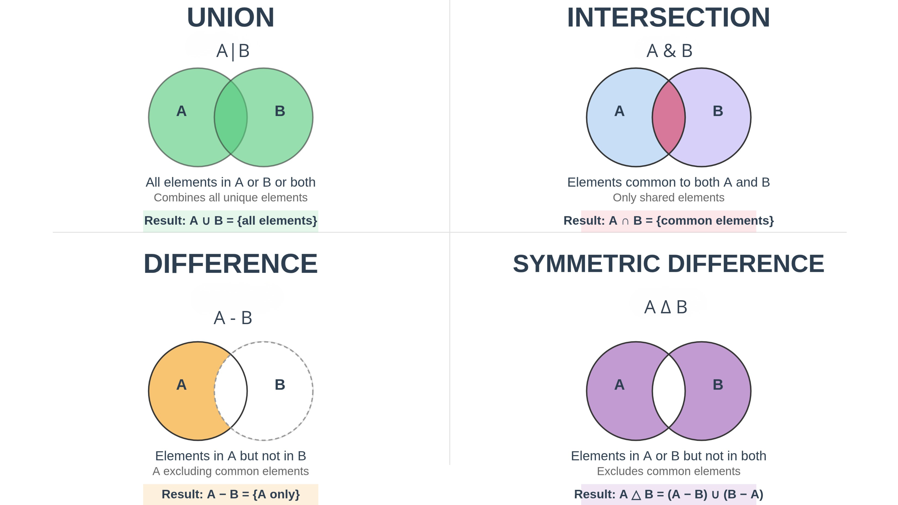
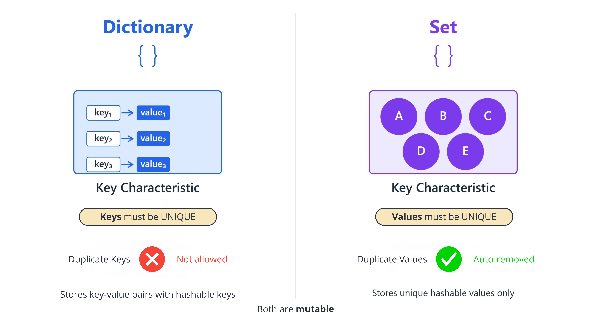

Chapter 1: Dictionaries and Sets#
1. Introduction#
In precision health, data is rarely a simple, ordered sequence. It’s often complex, labeled, and interconnected. While lists are excellent for ordered data, we need more powerful tools to model real-world entities like patient records or unique sets of genetic markers. This section introduces two of Python’s most versatile data structures: dictionaries and sets.
The learning journey will begin with dictionaries, which act as digital filing cabinets, storing information in key-value pairs that mirror a patient’s chart. We will then explore sets, which are optimized for storing unique elements and performing powerful comparisons, essential for tasks like analyzing symptom overlap between patient cohorts. By the end, you will be able to use these structures to organize and analyze complex health data effectively.
2. Key Concepts and Definitions#
Dictionary: A mutable, unordered collection that stores data in
key:valuepairs. In a medical context, it’s the perfect model for a patient’s file, where the ‘key’ is a data label (e.g.,"patient_id") and the ‘value’ is the data itself (e.g.,"PT123456"). This allows for fast, descriptive data lookups instead of relying on numerical indices.Key-Value Pair: The fundamental building block of a dictionary. It links a unique, immutable identifier (the key) to its associated data (the value). For instance, in a patient record,
"hba1c": {"value": 7.2, "unit": "%"}is a key-value pair that clearly labels a specific lab result and its unit.Set: An unordered collection of unique, immutable elements. Sets are highly optimized for checking if an item is present and for removing duplicate entries. In genomics, a set could represent the unique genetic variants found in a patient’s DNA sample, automatically discarding any duplicates from the sequencing data.
Immutability (for Keys/Elements): A critical rule stating that dictionary keys and set elements cannot be of a mutable type (like a list). This ensures that the identifier for a piece of data remains constant and reliable. This is why a patient’s ID (a string) can be a key, but a list of their changing symptoms cannot.
Set Operations: Mathematical actions that compare and combine sets. The main operations are:
Union (
|): Merges two sets to create a new set containing all unique elements from both. This is useful for compiling a master list of all medications prescribed across two different hospital wards.Intersection (
&): Creates a new set containing only the elements that are common to both sets. This can identify patients who are present in both a “diabetic” cohort and a “hypertensive” cohort.Difference (
-): Creates a new set with elements from the first set that are not in the second set. This can isolate patients in a clinical trial’s treatment group who are not in the placebo group.
3. Main Content#
3.1 Dictionaries: The Digital Patient Record#
Medical Background: Think of a Python dictionary as a digital patient chart. Each piece of information, like “Patient ID” or “Blood Type,” is a unique
keythat points to a specificvalue(e.g., “PT123456” or “O+”). This structure is ideal for organizing and accessing related data points for a single entity.
Creating, Accessing, and Modifying
# A patient record using a dictionary
patient_data = {
"patient_id": "PT123456",
"age": 45
}
# Update a value using its key
patient_data["age"] = 46
print(patient_data)
# Add a structured lab result
patient_data["hba1c"] = {"value": 7.2, "unit": "%"}
print(patient_data)
# Safely access a key that might not exist
allergies = patient_data.get("allergies", "None Recorded") # Gets the "allergies" value; returns "None Recorded" if the key is missing.
print(f"Allergies: {allergies}")
# The 'in' keyword provides a fast check for a key's existence
has_age = "age" in patient_data # Returns True
# Output:
# {'patient_id': 'PT123456', 'age': 46}
# {'patient_id': 'PT123456', 'age': 46, 'hba1c': {'value': 7.2, 'unit': '%'}}
# Allergies: None Recorded
Note: Why Use .get() Instead of Square Brackets []?
You can equally write the code like this
allergies = patient_data["allergies"]Have a think. What happens when you do this? Why would this method be more risky?
Try it yourself: Modify the code above or write your own version
# TODO: Write your code here
# Hint: Try modifying the example above
Pro Tip: Always prefer using the
.get()method to access dictionary keys that might be optional, like “allergies” or “secondary_diagnosis”. It prevents your program from crashing with aKeyErrorand allows you to provide a safe, meaningful default value.
Important: Dictionary keys must be immutable. This means you can use strings, numbers, or tuples as keys, but you cannot use mutable types like lists or other dictionaries. This rule ensures that a key’s value remains constant and reliable for data retrieval.
Iterating Over Dictionaries
# Loop through key-value pairs using .items()
print("Patient Details:")
for key, value in patient_data.items():
print(f"- {key}: {value}")
# Output:
# Patient Details:
# - patient_id: PT123456
# - age: 46
Try it yourself: Modify the code above or write your own version
# TODO: Write your code here
# Hint: Try modifying the example above
Removing Entries
# .pop() removes a key and returns its value
hba1c_result = patient_data.pop("hba1c")
print(f"Value returned by pop: {hba1c_result}")
print(f"Dictionary after pop: {patient_data}")
# del removes a key-value pair without returning anything
del patient_data["age"]
print(f"Final dictionary after del: {patient_data}")
# Output:
# Value returned by pop: {'value': 7.2, 'unit': '%'}
# Dictionary after pop: {'patient_id': 'PT123456', 'age': 46}
# Final dictionary after del: {'patient_id': 'PT123456'}
Try it yourself: Modify the code above or write your own version
# TODO: Write your code here
# Hint: Try modifying the example above
Reflection Moment: How could you use a dictionary to structure the data from a patient’s vital signs monitor over a 24-hour period? What would be the keys, and what kind of data structures might you use for the values?
While dictionaries are excellent for storing structured records with key-value pairs, clinical data analysis often requires us to work with unique collections of items, such as patient IDs in a trial or distinct symptoms in a cohort. For these tasks, Python provides another powerful and efficient data structure: the set.
3.2 Sets: Managing Unique Data Collections#
In Practice: Epidemiologists use set operations constantly to analyze patient cohorts. For example, finding the intersection of patients with ‘symptom A’ and patients exposed to ‘factor B’ can help identify correlations. The union of all reported symptoms in an outbreak can quickly provide a complete picture for public health alerts.
Creating, Adding, and Removing
# Create a set from a list to instantly remove duplicates
symptoms_list = ["cough", "fever", "cough", "headache"]
unique_symptoms = set(symptoms_list)
print(f"Unique Symptoms: {unique_symptoms}")
# Add and remove elements
unique_symptoms.add("fatigue")
unique_symptoms.remove("headache") # Raises KeyError if not found
unique_symptoms.discard("rash") # Safely does nothing if not found
print(f"Final Symptoms: {unique_symptoms}")
# Output:
# Unique Symptoms: {'cough', 'fever', 'headache'}
# Final Symptoms: {'cough', 'fever', 'fatigue'}
Try it yourself: Modify the code above or write your own version
# TODO: Write your code here
# Hint: Try modifying the example above
Important: Like dictionary keys, set elements must be immutable. Trying to add a list or dictionary to a set will result in a
TypeError.
Debug Note: A common error is using
.remove()for an element that might not be in the set, which causes aKeyErrorand crashes the program. Use.discard()when you need to safely remove an element without knowing for sure if it exists.
Set Operations
cohort_a_symptoms = {"fever", "cough", "sore throat"}
cohort_b_symptoms = {"fever", "headache", "fatigue"}
# Union (|): All unique symptoms from both cohorts
all_symptoms = cohort_a_symptoms | cohort_b_symptoms
# Intersection (&): Symptoms common to both cohorts
common_symptoms = cohort_a_symptoms & cohort_b_symptoms
# Difference (-): Symptoms in cohort A but not in B
unique_to_a = cohort_a_symptoms - cohort_b_symptoms
# Symmetric Difference (^): Symptoms in A or B, but not both
non_overlapping = cohort_a_symptoms ^ cohort_b_symptoms
print(f"Union: {all_symptoms}\nIntersection: {common_symptoms}")
print(f"Difference (A-B): {unique_to_a}\nSymmetric Difference: {non_overlapping}")
# Output:
# Union: {'headache', 'sore throat', 'fatigue', 'fever', 'cough'}
# Intersection: {'fever'}
# Difference (A-B): {'sore throat', 'cough'}
# Symmetric Difference: {'headache', 'sore throat', 'fatigue', 'cough'}
Try it yourself: Modify the code above or write your own version
# TODO: Write your code here
# Hint: Try modifying the example above
Pro Tip: Checking for an element’s existence (e.g.,
"fever" in cohort_a_symptoms) is significantly faster with a set than with a list, especially for large datasets. If you need to perform many membership checks, converting a list to a set first can dramatically improve your code’s performance.

Set Comparisons
required_symptoms = {"fever", "cough"}
is_subset = required_symptoms.issubset(cohort_a_symptoms)
print(f"Required symptoms are a subset of Cohort A: {is_subset}")
# Output:
# Required symptoms are a subset of Cohort A: True
Try it yourself: Modify the code above or write your own version
# TODO: Write your code here
# Hint: Try modifying the example above
Reflection Moment: Imagine you are consolidating medication lists from three different hospital departments for a single patient. How could you use sets to quickly generate a final, de-duplicated list of all medications the patient is prescribed?
4. Practice Exercises#
Exercise 1: Creating and Updating a Medication Record#
Objective: Practice creating a dictionary, updating a value, and accessing a value with a default. Time: 3 minutes Medical Context: At City Medical Center, Dr. Chen needs to create a digital record for a new prescription. Medication records are frequently stored as dictionaries, where properties are key-value pairs.
Create a medication dictionary for ‘Paracetamol’ (a generic drug name) with an initial 'dosage_mg' of 0. Then, update the dosage_mg to the correct value of 500. Finally, since the brand isn’t always specified, print the value for the key "brand_name", ensuring your code defaults to "Generic" if it’s missing.
📝 Your Solution:
# TODO: Write your solution here
# Hint: Check the task description above
🔍 Click to reveal solution
Solution
medication = {'name': 'Paracetamol', 'dosage_mg': 0}
medication['dosage_mg'] = 500
brand_name = medication.get("brand_name", "Generic")
print(brand_name)
# Output:
# Generic
Explanation: We initialize the dictionary, then use key-based assignment to update the dosage. The .get() method is used for safe access, returning the default value "Generic" because the key "brand_name" does not exist.
Key Learning: Using .get() with a default value is a robust way to prevent KeyError exceptions when a key might be absent.
Exercise 2: Finding Common Patients Between Groups#
Objective: Use a set operation to find the intersection of two sets. Time: 2 minutes Medical Context: Two research teams at City Medical Center have submitted lists of patient IDs for a new clinical study. To ensure there are no duplicate enrollments, you need to identify any patient ID that appears in both groups.
Given group_1 = {"PT000001", "PT000002", "PT000003"} and group_2 = {"PT000003", "PT000004", "PT000005"}, write one line of code to find the common patient ID(s) and print the result.
📝 Your Solution:
# TODO: Write your solution here
# Hint: Check the task description above
🔍 Click to reveal solution
Solution
group_1 = {"PT000001", "PT000002", "PT000003"}
group_2 = {"PT000003", "PT000004", "PT000005"}
common_patients = group_1.intersection(group_2)
print(common_patients)
# Output:
# {'PT000003'}
Explanation: The .intersection() method (or the & operator) performs a set intersection, which evaluates to a new set containing only the elements that exist in both group_1 and group_2.
Key Learning: The intersection operation is a concise and efficient tool for finding common elements between any two sets.
Exercise 3: Analyzing Patient Symptom Overlap#
Objective: Use multiple set operations to analyze and compare data. Time: 5 minutes Medical Context: During a disease outbreak, epidemiologists compare symptoms between patients to identify patterns. Understanding which symptoms are shared and which are unique is crucial for diagnosis and tracking.
A patient, patient_A, reports the following symptoms: ["fever", "cough", "headache", "fatigue"]. Another patient, patient_B, reports: ["cough", "sore throat", "runny nose"].
Create a unique set of symptoms for each patient.
Find the symptoms that both patients share.
Find the symptoms that are unique to
patient_A.Print the results with descriptive labels.
📝 Your Solution:
# TODO: Write your solution here
# Hint: Check the task description above
🔍 Click to reveal solution
Solution
symptoms_A_list = ["fever", "cough", "headache", "fatigue"]
symptoms_B_list = ["cough", "sore throat", "runny nose"]
# 1. Create unique sets of symptoms
symptoms_A = set(symptoms_A_list)
symptoms_B = set(symptoms_B_list)
# 2. Find shared symptoms (intersection)
shared_symptoms = symptoms_A & symptoms_B
# 3. Find symptoms unique to patient A (difference)
unique_to_A = symptoms_A - symptoms_B
# 4. Print the results
print(f"Shared Symptoms: {shared_symptoms}")
print(f"Symptoms Unique to Patient A: {unique_to_A}")
# Output:
# Shared Symptoms: {'cough'}
# Symptoms Unique to Patient A: {'headache', 'fever', 'fatigue'}
Explanation: First, we convert the lists to sets to automatically handle any duplicate entries. Then, we use the intersection operator (&) to find common elements and the difference operator (-) to find elements present in symptoms_A but not in symptoms_B.
Key Learning: Combining set creation with set operations provides a powerful workflow for cleaning and comparing data collections.
5. Practical Applications#
Patient Record Management: Dictionaries are the standard for modeling electronic health records (EHRs). A single dictionary can represent a patient, with keys like
"patient_id","dob","blood_type", and"medications". The programming technique involves using nested dictionaries, where the value for"medications"could be a list of other dictionaries. This has a real-world impact by allowing clinicians to retrieve specific information instantly, such aspatient_record.get("blood_type").Clinical Trial Cohort Analysis: Sets are invaluable for managing and comparing groups of patients in a clinical trial. A researcher can define
cohort_Aandcohort_Bas sets of patient IDs. The programming technique of usingcohort_A.intersection(cohort_B)has the real-world impact of immediately highlighting data integrity errors, such as a patient being incorrectly assigned to both the treatment and placebo groups.Genomic Variant Analysis: In the medical context of genomics, a patient may have thousands of genetic variants. The programming technique of storing these variants in a set ensures the list is de-duplicated and allows for rapid checks. The real-world impact is that a program can quickly determine if a patient has a specific risk-associated variant with an
incheck (e.g.,if "rs12345" in patient_variants:), which is critical for risk assessment.Pharmacogenomics Database: A dictionary can be used to map specific genetic markers (keys) to drug efficacy or recommended dosages (values). This programming technique enables personalized medicine. The real-world impact is that a clinical decision support system can query this dictionary with a patient’s genotype (e.g.,
drug_response_db['CYP2D6*4']) to help a doctor determine the most effective and safe medication plan.
6. Summary and Key Takeaways#

In this section, we’ve explored how dictionaries and sets provide sophisticated ways to structure complex health data, moving beyond the simple sequences of lists and tuples.
Dictionaries store data as
key:valuepairs, making them ideal for structured, labeled information like patient records or configuration settings.You can access, modify, and add to dictionaries using keys, and iterate over them using methods like
.items().Sets store unique, unordered elements and are highly efficient for membership testing (
in) and removing duplicates from a collection.Powerful set operations like union (
|), intersection (&), and difference (-) provide a concise syntax for comparing data collections, a common task in cohort analysis.A critical rule for both structures is that dictionary keys and set elements must be of an immutable type (e.g., strings, numbers, or tuples).
With a solid grasp of how to organize data using Python’s primary data structures, we are now ready to learn how to control the flow of our programs and make decisions based on this data.